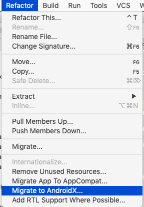
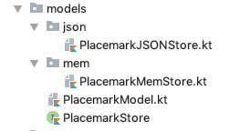

Migrate to AndroidX + manage library versions more optimally
We need to augment strings with some additional labels/titles currently missing from our manmifest:
<string name="title_activity_placemark_list">Placemarks</string>
<string name="title_activity_placemark">Placemark</string>
<string name="title_activity_edit_location">Placemark</string>This is a revised manifest - which uses the above labels to ensure all activities have a title.
In addition, each activity will have a PARENT_ACTIVITY - which we will make use of shorty:
<?xml version="1.0" encoding="utf-8"?>
<manifest xmlns:android="http://schemas.android.com/apk/res/android"
package="org.wit.placemark">
<uses-permission android:name="android.permission.ACCESS_FINE_LOCATION" />
<application
android:name=".main.MainApp"
android:allowBackup="true"
android:icon="@mipmap/ic_launcher"
android:label="@string/app_name"
android:roundIcon="@mipmap/ic_launcher_round"
android:supportsRtl="true"
android:theme="@style/AppTheme">
<activity android:name=".views.placemarklist.PlacemarkListView"
android:label="@string/title_activity_placemark_list"
android:launchMode="singleTop">
<intent-filter>
<action android:name="android.intent.action.VIEW" />
<action android:name="android.intent.action.MAIN" />
<category android:name="android.intent.category.LAUNCHER" />
</intent-filter>
</activity>
<activity android:name=".views.placemark.PlacemarkView"
android:label="@string/title_activity_placemark">
<meta-data
android:name="android.support.PARENT_ACTIVITY"
android:value=".views.placemarklist.PlacemarkListView" />
</activity>
<activity
android:name=".views.editlocation.EditLocationView"
android:label="@string/title_activity_edit_location">
<meta-data
android:name="android.support.PARENT_ACTIVITY"
android:value=".views.placemark.PlacemarkView" />
</activity>
<activity
android:name=".views.map.PlacemarkMapView"
android:label="@string/title_activity_placemark_maps"
android:launchMode="singleTop">
<meta-data
android:name="android.support.PARENT_ACTIVITY"
android:value=".views.placemarklist.PlacemarkListView" />
</activity>
<meta-data
android:name="com.google.android.geo.API_KEY"
android:value="@string/google_maps_key" />
</application>
</manifest>Part of the AppBar components we are using has automatic Up support:
Now that all our Views are derived from a BaseView class - and we have already established the PARENT relationship in the previous step - introducing this button into all views is fairly simple:
We already have this function, which we can extend:
fun init(toolbar: Toolbar, upEnabled: Boolean) {
toolbar.title = title
setSupportActionBar(toolbar)
supportActionBar?.setDisplayHomeAsUpEnabled(upEnabled)
}We make upEnabled a boolean parameter, as it does not make sense for all views to have the Up button.
This change then to all all views:
super.init(toolbar, true) super.init(toolbar, true) super.init(toolbar, true)PlacemarkListView
init(toolbarMain, false)Try this now - all views, except list, should have the up button.
AndroidX is a rationalisation of many of the libraries we are using
This is part of an overall repackaging of the Android SDK called 'JetPack'
In AndroidX, version numbers are reset and many of the package names/name spaces are reset to androidx.
Studio has a tool to automatically trigger this migration:

Try this now. THis will have changed the following gradle entries:
implementation 'androidx.appcompat:appcompat:1.0.2'
implementation 'androidx.constraintlayout:constraintlayout:2.0.0-alpha2'
implementation 'androidx.cardview:cardview:1.0.0'
androidTestImplementation 'androidx.test:runner:1.1.0'
androidTestImplementation 'androidx.test.espresso:espresso-core:3.1.0'... and these file will have have been modified by the migration:
gradle.properties
app/build.gradle
app/src/androidTest/java/org/wit/placemark/ExampleInstrumentedTest.kt
app/src/main/java/org/wit/placemark/helpers/LocationHelpers.kt
app/src/main/java/org/wit/placemark/views/BaseView.kt
app/src/main/java/org/wit/placemark/views/placemarklist/PlacemarkAdapter.kt
app/src/main/java/org/wit/placemark/views/placemarklist/PlacemarkListView.kt
app/src/main/res/layout/activity_edit_location.xml
app/src/main/res/layout/activity_placemark.xml
app/src/main/res/layout/activity_placemark_list.xml
app/src/main/res/layout/activity_placemark_map.xml
app/src/main/res/layout/card_placemark.xml
app/src/main/res/layout/content_placemark_map.xmlThese are largely import signature modifications.
Rebuild now and verify that the app performs as before.
Here is a revised version of main gradle script:
apply plugin: 'com.android.application'
apply plugin: 'kotlin-android'
apply plugin: 'kotlin-android-extensions'
androidExtensions {
experimental = true
}
android {
compileSdkVersion 28
defaultConfig {
applicationId "org.wit.placemark"
minSdkVersion 23
targetSdkVersion 28
versionCode 1
versionName "1.0"
testInstrumentationRunner "androidx.test.runner.AndroidJUnitRunner"
}
buildTypes {
release {
minifyEnabled false
proguardFiles getDefaultProguardFile('proguard-android.txt'), 'proguard-rules.pro'
}
}
}
ext {
app_compat_version = '1.0.2'
constraint_layout_version = '2.0.0-alpha2'
material_version = '1.0.0'
cardview_version = '1.0.0'
design_library_version = '26.1.0'
support_library_version = '26.1.0'
play_services_maps_version = '16.0.0'
play_services_location_version = '16.0.0'
anko_version = '0.10.7'
anko_commons_version = '0.10.7'
gson_version = '2.8.5'
}
dependencies {
implementation fileTree(dir: 'libs', include: ['*.jar'])
implementation "org.jetbrains.kotlin:kotlin-stdlib-jdk7:$kotlin_version"
implementation "androidx.appcompat:appcompat:$app_compat_version"
implementation "androidx.constraintlayout:constraintlayout:$constraint_layout_version"
implementation "com.google.android.material:material:$material_version"
implementation "androidx.cardview:cardview:$cardview_version"
implementation "com.google.android.gms:play-services-maps:$play_services_maps_version"
implementation "com.google.android.gms:play-services-location:$play_services_location_version"
implementation "org.jetbrains.anko:anko-commons:$anko_commons_version"
implementation "org.jetbrains.anko:anko:$anko_version"
implementation "com.google.code.gson:gson:$gson_version"
testImplementation 'junit:junit:4.12'
androidTestImplementation 'androidx.test:runner:1.1.0'
androidTestImplementation 'androidx.test.espresso:espresso-core:3.1.0'
}The main change here is the introduction of a new section:
ext {
app_compat_version = '1.0.2'
constraint_layout_version = '2.0.0-alpha2'
material_version = '1.0.0'
cardview_version = '1.0.0'
design_library_version = '26.1.0'
support_library_version = '26.1.0'
play_services_maps_version = '16.0.0'
play_services_location_version = '16.0.0'
anko_version = '0.10.7'
anko_commons_version = '0.10.7'
gson_version = '2.8.5'
}This centralises in one area all the library versions we are using. Having them together is a major advantage when we are reviewing and updating library versions - particularly when some library major version numbers must be kept in sync.
The dependencies section then uses these identifiers instead of hard coded strings:
implementation fileTree(dir: 'libs', include: ['*.jar'])
implementation "org.jetbrains.kotlin:kotlin-stdlib-jdk7:$kotlin_version"
implementation "androidx.appcompat:appcompat:$app_compat_version"
implementation "androidx.constraintlayout:constraintlayout:$constraint_layout_version"
implementation "com.google.android.material:material:$material_version"
implementation "androidx.cardview:cardview:$cardview_version"
implementation "com.google.android.gms:play-services-maps:$play_services_maps_version"
implementation "com.google.android.gms:play-services-location:$play_services_location_version"
implementation "org.jetbrains.anko:anko-commons:$anko_commons_version"
implementation "org.jetbrains.anko:anko:$anko_version"
implementation "com.google.code.gson:gson:$gson_version"
testImplementation 'junit:junit:4.12'
androidTestImplementation 'androidx.test:runner:1.1.0'
androidTestImplementation 'androidx.test.espresso:espresso-core:3.1.0'
}Placemark application so far:
Refactor the Models package so that it is structured like this:

We will be introducing a new package here in the next lab